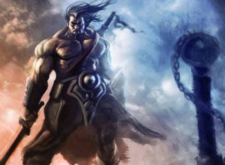
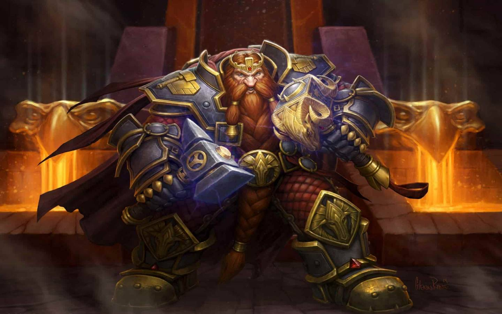
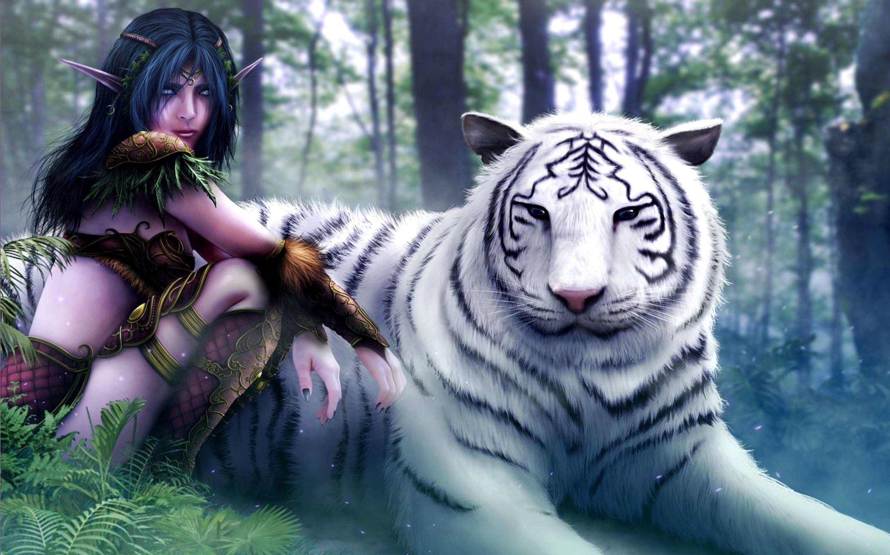

Humanos
·Zona de inicio: Bosque de Elwynn
·Ciudad capital: Ventormenta
·Líder: Anduin Wrynn
·Montura: Caballo
Defensores del reino.
Recientes descubrimientos han demostrado que los humanos descienden de los bárbaros vrykul,guerreros semigigantes que viven en Rasganorte. Los primeros humanos fueron esencialmente un pueblo segregado y tribal durante varios miles de años, hasta que la fuerza creciente del Imperio trol los obligó a unificarse. Así fue como se formó la nación de Arathor, junto con su capital, la ciudad estado de Strom.
Enanos
·Zona de inicio:Dun Morogh
·Ciudad capital: Forjaz
·Líder: Consejo de los Tres Martillos
·Montura: Carnero
Exploradores resistentes.
Los audaces y valientes enanos son una antigua raza descendiente de los seres terráneos de piedra viviente creados por los titanes cuando el mundo era joven. A causa de una extraña enfermedad conocida como «la maldición de la carne», los progenitores terráneos de los enanos sufrieron una transformación que convirtió su tez pétrea en piel carnosa. Estas criaturas de carne y hueso se autodenominaron «enanos», y esculpieron la grandiosa ciudad de Forjaz en los picos nevados de Khaz Modan.
Elfos de la noche
·Zona de inicio: Teldrassil
·Ciudad capital: Darnassus
·Líder: Tyrande Susurravientos y Malfurion Tempestira
·Montura: Sable de la noche
Guardianes venerables
Los ancestrales y recluidos elfos de la noche han desempeñado un papel fundamental en la forja del destino de Azeroth. Los elfos de la noche actuales todavía recuerdan la Guerra de los Ancestros de hace más de 10 000 años, cuando frustraron la primera invasión de Azeroth a manos de la Legión Ardiente. Siglos después, cuando los remanentes de la Legión se unieron a los viles sátiros, los elfos de la noche volvieron a hacer frente a la amenaza y "term"inaron venciendo a las fuerzas dispuestas a sembrar el caos en su mundo
Gnomos

·Zona de incio: Gnomeregan
·Ciudad capital: Gnomeregan
·Líder: Gelbin Mekkatorque
·Montura: Mecazancudo
Habilidosos y curiosos.
Los inteligentes, valientes y a menudo excéntricos gnomos representan una paradoja única entre las razas civilizadas de Azeroth. Esta raza de brillantes inventores y de una alegría incontenible ha sufrido traiciones, segregaciones y casi el genocidio. Su extraordinario optimismo ante tales calamidades simboliza el espíritu verdaderamente resuelto de los gnomos.